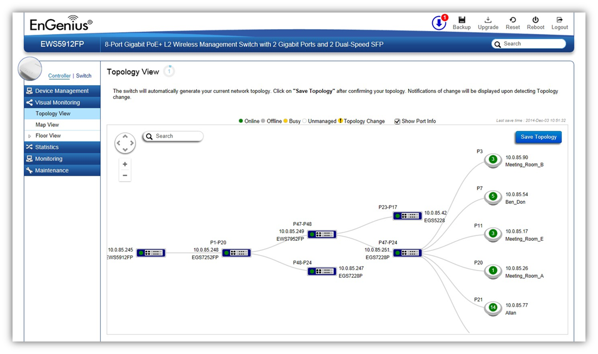

Visual Monitoring > Topology View
From here, you can see a visual view of the topology of all supported devices in the network. Use the directional pad and the plus or minus buttons to navigate your view of the
network. You can also search Access Points in the network via their IP or MAC address. Check the Show Port Info box to show whether you wish the search query to show
port information.

Navigating Tips
Use to scroll up, down, left, or right.
Use to Zoom in/out. Alternatively, you can use the mouse to navigate by clicking and dragging the left mouse button. Use the mouse wheel to zoom in/out.
Mouse over a device to show information about the device.
Left click on the Switch to redirect to the Switch UI on the collapsible topology tree.
Left click on the Access Point to redirect to the Active Clients page.
You can search for an Access Point using the IP Address or MAC address.
Click the Show Port Info box to show or hide port information on the Controller.
Click on for the Controller to save the current network topology. Changes will be displayed upon detecting a topology change.
Note: The EWS Switch can only generate topologies with EnGenius L2 Series switches. Non-EnGenius switches will be marked as “Uncontrollable LAN Switches” in the generated topology.
Created with the Personal Edition of HelpNDoc: Create HTML Help, DOC, PDF and print manuals from 1 single source